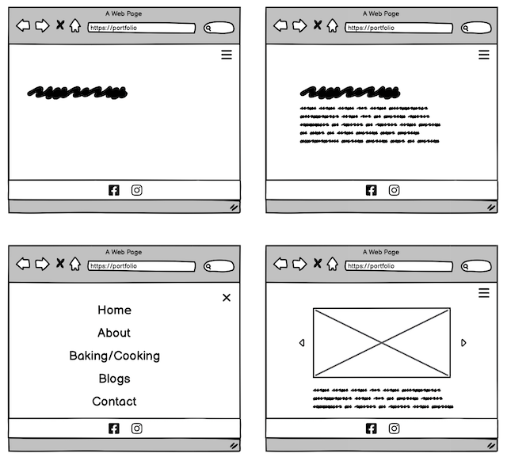
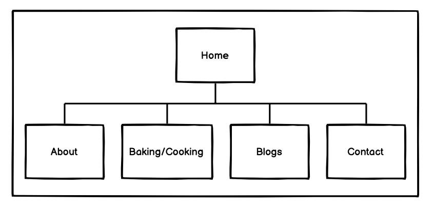

Project Design
Project Overview
Description:
The application we are designing is a website that caters to the needs of food enthusiasts who enjoy cooking and baking. The website is aimed at providing a platform for individuals to showcase their culinary skills and share their knowledge of food with others. Our website will offer users a space to share their favorite recipes, cooking techniques, and unique dishes with like-minded individuals. The primary goal of the website is to inspire users to explore their passion for cooking and baking and learn new skills along the way.
Target Audience:
Our website is designed for individuals who love cooking and baking and want to connect with other food enthusiasts from around the world. The intended users of the website are anyone who has an interest in food and wants to learn more about cooking and baking. We aim to create a welcoming community of food lovers who can share their experiences and knowledge with one another. Our website will offer a variety of resources and tools to help users improve their culinary skills and connect with others who share their interests.
Project Goals:
The content of our website is designed to inspire and motivate individuals to explore their passion for cooking and baking. The website will feature a wide range of content, including recipes, instructional videos, cooking tips and techniques, and articles on food-related topics. The website will cater to a diverse range of culinary interests, from beginner-level recipes to advanced techniques. Our goal is to offer users a one-stop-shop for all their cooking and baking needs, with a focus on providing quality content that is both engaging and informative. Overall, we hope to create a dynamic and inspiring online community for food lovers around the world.
Client Information
Our client for this project is Zahra Zynab, a student at ECU pursuing a double major in Hospitality Management and Food and Beverages. Zahra is an enthusiastic food lover who wants to create a website that caters to individuals who share her passion for cooking and baking. She envisions a platform where users can share their knowledge and experiences, connect with other food enthusiasts, and inspire one another to explore new culinary horizons. Zahra's email address is [private], and she prefers not to share her phone number.
Wireframe
Sitemap
Page Design
- Home
- Purpose of the page: This page serves as the landing page for the website and provides an overview of what the website is about.
- Content of the page: Name of the Customer.
- About
- Purpose of the page: This page provides more information about the website and its creators.
- Content of the page: Information about the website's mission and goals, a brief history of the website, information about the creators and their backgrounds.
- Baking/Cooking
- Purpose of the page: This page serves as a repository of recipes and cooking tips.
- Content of the page: A selection of recipes and cooking tips, categorized by type of food or cooking method.
- Blogs
- Purpose of the page: This page contains articles and blog posts on food-related topics
- Content of the page: Articles and blog posts on food-related topics, including cooking techniques, culinary trends, and food culture.
- Contact
- Purpose of the page: This page allows users to get in touch with the creators of the website.
- Content of the page: A contact form for users to send messages to the website's creators, as well as information on how to follow the website on social media.
Dymic Functionality
The website will feature a interactive text trasition that automatically changes next decribing the cleint.